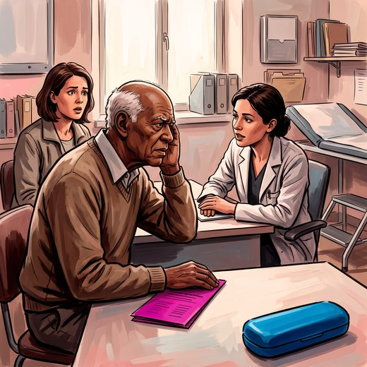

Consulta rápida à beira do leito
Condutas, doses e interações.
Referências da aula · 6
- Pirozzo S, Papinczak T, Glasziou P. Whispered voice test for screening for hearing impairment in adults and children: systematic review. BMJ. 2003;327(7421):967-71. PMID 14576249. doi:10.1136/bmj.327.7421.967.PubMedDOI
- Gates GA, Murphy M, Rees TS, Fraher A. Screening for handicapping hearing loss in the elderly. J Fam Pract. 2003;52(1):56-62. PMID 12540314.PubMed
- US Preventive Services Task Force. Screening for impaired visual acuity in older adults: US Preventive Services Task Force recommendation statement. JAMA. 2022;327(21):2123-8. PMID 35608838.PubMed
- Livingston G, Huntley J, Liu KY, et al. Dementia prevention, intervention, and care: 2024 report of the Lancet standing Commission. Lancet. 2024;404(10452):572-628. PMID 39096926.PubMed
- Freitas EV, Py L, organizadores. Tratado de Geriatria e Gerontologia. 5ª ed. Rio de Janeiro: Guanabara Koogan; 2022.
- Linhares Junior JD. Casos clínicos ilustrativos construídos para as aulas, a partir da prática clínica geriátrica. In: Pós-graduação em Geriatria 2.0. Afya; 2026.